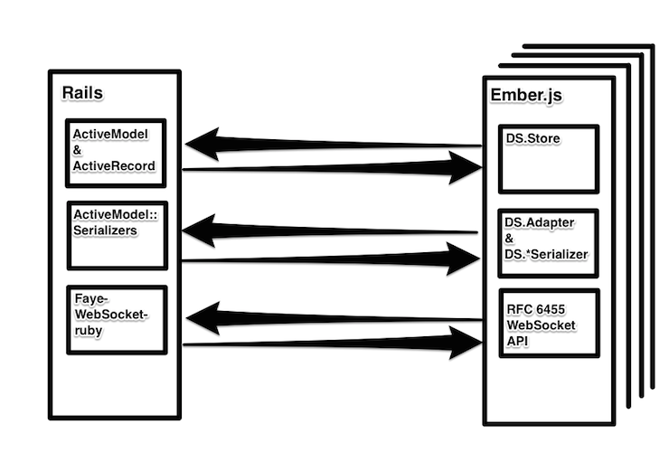

Bixel
A Multiplayer Game and Network Protocols
Created by John Huynh
Ember.js
Web Sockets
Rails
PostgreSQL

Handshakes
Layers

JSON
{
uuid: "21EC2020-3AEA-4069-A2DD-08002B30309D",
event_name: "player/move",
data: {
player: {
id: 82,
name: "Don Quixote",
x: 120,
y: 64,
...
}
}
}
Considerations
- QoS
- "Counting to Infinity"
- Time stamping JSON
- Eventual Consistency